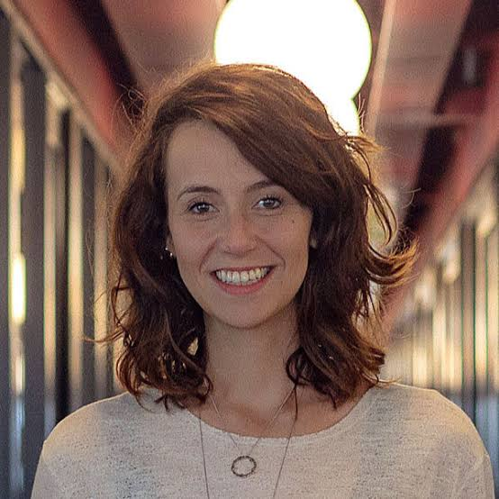

Camila Achutti, 32 anos
Profissão: Empreendedora e Cofundadora da Plataforma Educacional MasterTech
Camila Achutti é uma jovem inovadora brasileira, conhecida por seu trabalho como engenheira de software e empreendedora. Formada em Ciências da Computação pela USP, ela é cofundadora da plataforma educacional MasterTech e fundadora da consultoria Ponte 21. Seu trabalho destaca-se pelo incentivo à participação feminina na tecnologia, área na qual apenas cerca de 20% dos profissionais são mulheres no Brasil. Com projetos educacionais, Camila busca empoderar mulheres, mostrando que elas podem conquistar seu espaço e superar barreiras no setor.